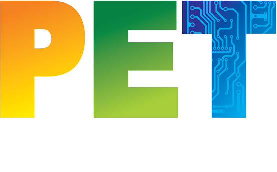

Feira de Engenharia e Energia
Para mudar o loop, digite a senha da Área dos Petianos.
A tela passa sozinha por pódio → planta → QR code, 10 segundos em cada, e recomeça. Fica salvo neste aparelho: se a TV recarregar a página, o loop volta sozinho.